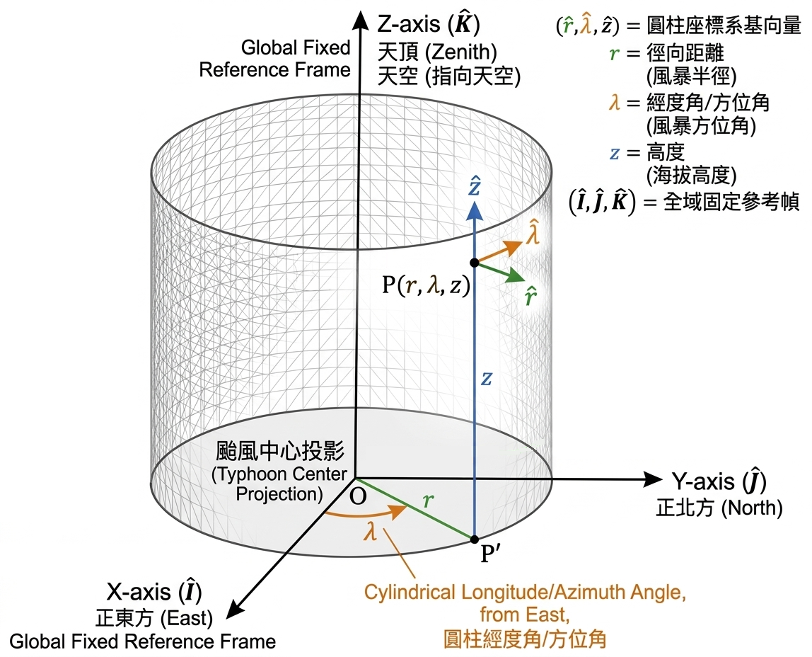

目標
將動量方程式
\[
\frac{D \vec{V}}{D t} + f\hat{k}\times \vec{V} = -\frac{1}{\rho}\nabla P - g\hat{k} + \text{Friction}
\]
寫在圓柱座標系 \((r, \lambda, z)\)
\[\begin{split}\begin{aligned}
\text{[u 徑向]} \quad &\frac{Du}{Dt} - \frac{v^2}{r} - fv = -\frac{1}{\rho} \frac{\partial P}{\partial r} + \text{RHS}_{\hat{r}} \\
\text{[v 切向]} \quad &\frac{Dv}{Dt} + \frac{uv}{r} + fu = -\frac{1}{\rho r} \frac{\partial P}{\partial \lambda} + \text{RHS}_{\hat{\lambda}} \\
\text{[w 垂直]} \quad &\frac{Dw}{Dt} = -\frac{1}{\rho} \frac{\partial P}{\partial z} - g + \text{RHS}_{\hat{z}}
\end{aligned}\end{split}\]
操作流程
推導方法的標準作業流程（SOP）流程圖：
[Step 1] 定義全域常數 (Global Constants)
👉 在太空中建立絕對不會動的直角參考座標系 \((\hat{I}, \hat{J}, \hat{K})\)。
[Step 2] 實作局部物件 (Local Basis Objects)
👉 將圓柱座標的局部基底 \((\hat{r}, \hat{\lambda}, \hat{z})\) 投影到絕對座標系上。
[Step 3] 呼叫時間導數方法 (Chain Rule)
👉 計算基底向量隨流體移動時的「旋轉變化量」 \(\frac{D\hat{r}}{Dt}, \frac{D\hat{\lambda}}{Dt}, \frac{D\hat{z}}{Dt}\)。
[Step 4] 執行總速度展開 (Product Rule)
👉 對 \(\vec{V} = u\hat{r} + v\hat{\lambda} + w\hat{z}\) 執行全質導數。
[Step 5] 靠慮其他外力(科氏力)
👉 計算 \(f\hat{z} \times \vec{V}\) 並將所有項整合。
[Step 1] 定義全域常數 (Global Constants)：建立絕對直角參考座標系
流體質塊在颱風內移動時，它的「距離中心距離、跟東方的夾角、距地表高度」每走一步都在改變，如果我們要對這些會變動的局部向量（\(\hat{r}, \hat{\lambda}, \hat{z}\)）進行微積分，我們必須先架設一個 「上帝視角」 ——一個絕對不會因為經緯度改變而彎曲、旋轉的框架。
這就是我們現在要建立的全域直角座標系 \((\hat{I}, \hat{J}, \hat{K})\)。
1. 座標系的幾何定義 (The Setup)
我們將原點 \((0,0,0)\) 釘在颱風地表的中心。接著，伸出三根互相垂直且筆直的軸：
\(\hat{K}\) (Z-axis)：垂直往上，穿過颱風眼指向天空。
\(\hat{I}\) (X-axis)：水平指向某個絕對固定的參考方向（例如正東方）。
\(\hat{J}\) (Y-axis)：水平指向與 X 軸垂直的絕對方向（例如正北方）。

2. 核心數學性質 (The Mathematical Property)
因為這三根軸是筆直地穿出圓柱，無論流體質塊今天是在近的東邊還是轉到遠的西邊，這三根軸的方向在相對於圓柱的空間中永遠不會改變。
因此，它們的全質導數（時間變化率）嚴格為零：
\[
\frac{D \hat{I}}{Dt} = 0, \quad \frac{D \hat{J}}{Dt} = 0, \quad \frac{D \hat{K}}{Dt} = 0
\]
老師的特別提醒（物理意義）：????????
為什麼我們要把它固定在颱風中心，而不是固定在遙遠的太空中？
因為在我們的大氣動力方程式 \(\frac{D \vec{V}}{Dt} + 2\vec{\Omega} \times \vec{V} = -\frac{1}{\rho}\nabla P\) 已經有 \(2\vec{\Omega} \times \vec{V}\) 這個科氏力項了，這個科氏力項已經幫我們處理了「地球自轉」帶來的假力。因此，我們的座標系 \((\hat{I}, \hat{J}, \hat{K})\) 只需要跟著地球一起轉就好，我們後續計算的 \(\frac{D}{Dt}\) 都是 「相對於颱風中心」 的變化，這樣可以完美分離出「科氏力」與「幾何曲率產生的度量項」！
[Step 2] 實作局部物件 (Local Basis Objects)
我們的目標是把局部的 \((\hat{i}, \hat{j}, \hat{k})\) 寫成絕對座標 \((\hat{I}, \hat{J}, \hat{K})\) 的線性組合。為了推導嚴謹，我們從最直觀的「正上方」開始。
1. 定義 \(\hat{z}\) (垂直方向 / Vertical direction)
圓柱座標的垂直方向，就是絕對座標的垂直方向。它完全不受到半徑 \(r\) 或是旋轉角度 \(\lambda\) 的影響。
\[\hat{z} = \hat{K}\]
2. 定義 \(\hat{r}\) (徑向 / Radial direction)
流體質塊距離中心的水平方向。假設質塊所在的方位角為 \(\lambda\)（從 \(\hat{I}\) 軸逆時針算起的角度），那麼指向外側的單位向量，可以直接用三角函數投影到水平面的 X 軸與 Y 軸上：
\[\hat{r} = \cos\lambda \hat{I} + \sin\lambda \hat{J}\]
(物理意義：這代表無論你的高度 \(z\) 是多少，只要角度 \(\lambda\) 決定了，你往外指的方向就決定了。)
3. 定義 \(\hat{\lambda}\) (切向 / Azimuthal direction)
\(\hat{\lambda}\) 是沿著逆時針圓周的切線方向。
在幾何上，切線方向剛好就是徑向 \(\hat{r}\) 逆時針旋轉 90 度；在微積分上，就是把位置向量對著角度 \(\lambda\) 偏微分 \(\frac{\partial \hat{r}}{\partial \lambda}\)：
\[\hat{\lambda} = -\sin\lambda \hat{I} + \cos\lambda \hat{J}\]
它們整理成矩陣形式:
\[\begin{split}\begin{bmatrix}
\hat{r} \\
\hat{\lambda} \\
\hat{z}
\end{bmatrix}
=
\begin{bmatrix}
\cos\lambda & \sin\lambda & 0 \\
-\sin\lambda & \cos\lambda & 0 \\
0 & 0 & 1
\end{bmatrix}
\begin{bmatrix}
\hat{I} \\
\hat{J} \\
\hat{K}
\end{bmatrix}\end{split}\]
或者經過一點觀察 \(\mathbf{R}^{-1} = \mathbf{R}^T\) 可以得到
\[\begin{split}\begin{bmatrix}
\hat{I} \\
\hat{J} \\
\hat{K}
\end{bmatrix}
=
\begin{bmatrix}
\cos\lambda & -\sin\lambda & 0 \\
\sin\lambda & \cos\lambda & 0 \\
0 & 0 & 1
\end{bmatrix}
\begin{bmatrix}
\hat{r} \\
\hat{\lambda} \\
\hat{z}
\end{bmatrix}\end{split}\]
[Step 3] 呼叫時間導數方法 (Chain Rule)
定理：全質導數的連鎖律
對於任何依賴於空間位置 \((\lambda, \phi)\) 的向量 \(\hat{e}\)，當質塊隨流體移動時，其全質導數可以展開為：
\[\frac{D\hat{e}}{Dt} = \frac{\partial \hat{e}}{\partial r} \frac{Dr}{Dt} + \frac{\partial \hat{e}}{\partial \lambda} \frac{D\lambda}{Dt} + \frac{\partial \hat{e}}{\partial z} \frac{Dz}{Dt}\]
(物理翻譯：向量隨時間的改變 ＝ 往外走造成的變形 ＋ 逆時針繞圈造成的旋轉 ＋ 往上走造成的變形)
定義角速度：
我們已知流體往東的速度是 \(u\)，往北的速度是 \(v\)，在半徑為 \(R\) 的地球上：
徑向速度 (往外)：\(u = \frac{Dr}{Dt}\)
切向速度 (逆時針)：\(v = r\frac{D\lambda}{Dt}\) \(\Rightarrow\) 角速度改變率：\(\frac{D\lambda}{Dt} = \frac{v}{r}\)
垂直速度 (往上)：\(w = \frac{Dz}{Dt}\)
1. 計算 \(\frac{D\hat{r}}{Dt}\) (徑向向量的時間導數)
\[\begin{split}\begin{aligned}
\frac{D\hat{r}}{Dt} &= \frac{\partial \hat{r}}{\partial r} \frac{Dr}{Dt} + \frac{\partial \hat{r}}{\partial \lambda} \frac{D\lambda}{Dt} + \frac{\partial \hat{r}}{\partial z} \frac{Dz}{Dt} \\
&= \frac{\partial }{\partial r} \left[ \cos\lambda \hat{I} + \sin\lambda \hat{J} \right] \frac{Dr}{Dt} + \frac{\partial }{\partial \lambda} \left[ \cos\lambda \hat{I} + \sin\lambda \hat{J} \right] \frac{D\lambda}{Dt} + \frac{\partial }{\partial z} \left[ \cos\lambda \hat{I} + \sin\lambda \hat{J} \right] \frac{Dz}{Dt} \\
&= 0 \frac{Dr}{Dt} + \frac{\partial }{\partial \lambda} \left[ \cos\lambda \hat{I} + \sin\lambda \hat{J} \right] \frac{D\lambda}{Dt} + 0 \frac{Dz}{Dt} \\
&= (-\sin\lambda \hat{I} + \cos\lambda \hat{J}) \frac{D\lambda}{Dt} \overset{\text{noticed}}{=} \hat{\lambda} \frac{D\lambda}{Dt}\\
&= (-\sin\lambda (\cos\lambda \hat{r}- \sin\lambda \hat{\lambda}) + \cos\lambda ( \sin\lambda \hat{r} + \cos\lambda \hat{\lambda} )) \frac{D\lambda}{Dt} \\
&= ((-\sin\lambda \cos\lambda \hat{r} + \sin^2\lambda \hat{\lambda}) + ( \cos\lambda \sin\lambda \hat{r}+ \cos^2\lambda \hat{\lambda})) \frac{D\lambda}{Dt}\\
&= \hat{\lambda} \frac{D\lambda}{Dt} \\
&= \frac{v}{r} \hat{\lambda}
\end{aligned}\end{split}\]
2. 計算 \(\frac{D\hat{\lambda}}{Dt}\) (切向向量的時間導數)
\[\begin{split}\begin{aligned}
\frac{D\hat{\lambda}}{Dt} &= \frac{\partial \hat{\lambda}}{\partial r} \frac{Dr}{Dt} + \frac{\partial \hat{\lambda}}{\partial \lambda} \frac{D\lambda}{Dt} + \frac{\partial \hat{\lambda}}{\partial z} \frac{Dz}{Dt} \\
&= \frac{\partial }{\partial r} \left[ -\sin\lambda \hat{I} + \cos\lambda \hat{J} \right] \frac{Dr}{Dt} + \frac{\partial }{\partial \lambda} \left[ -\sin\lambda \hat{I} + \cos\lambda \hat{J} \right] \frac{D\lambda}{Dt} + \frac{\partial }{\partial z} \left[ -\sin\lambda \hat{I} + \cos\lambda \hat{J} \right] \frac{Dz}{Dt} \\
&= 0 \frac{Dr}{Dt} + \frac{\partial }{\partial \lambda} \left[ -\sin\lambda \hat{I} + \cos\lambda \hat{J} \right] \frac{D\lambda}{Dt} + 0 \frac{Dz}{Dt} \\
&= (-\cos\lambda \hat{I} - \sin\lambda \hat{J}) \frac{D\lambda}{Dt} \overset{\text{noticed}}{=} -\hat{r} \frac{D \lambda}{Dt}\\
&= (-\cos\lambda (\cos\lambda \hat{r}- \sin\lambda \hat{\lambda}) - \sin\lambda ( \sin\lambda \hat{r} + \cos\lambda \hat{\lambda} )) \frac{D\lambda}{Dt} \\
&= ( (-\cos^2\lambda \hat{r}+ \cos\lambda \sin\lambda \hat{\lambda}) - ( \sin^2\lambda \hat{r} + \sin\lambda\cos\lambda \hat{\lambda} )) \frac{D\lambda}{Dt} \\
&= -\hat{r} \frac{D \lambda}{Dt} \\
&= -\frac{v}{r} \hat{r}
\end{aligned}\end{split}\]
3. 計算 \(\frac{D\hat{z}}{Dt}\) (向上向量的時間導數)
\[\begin{split}\begin{aligned}
\frac{D\hat{z}}{Dt} &= \frac{\partial \hat{z}}{\partial r} \frac{Dr}{Dt} + \frac{\partial \hat{z}}{\partial \lambda} \frac{D\lambda}{Dt} + \frac{\partial \hat{z}}{\partial z} \frac{Dz}{Dt} \\
&= \frac{\partial }{\partial r} \left[ \hat{K} \right] \frac{Dr}{Dt} + \frac{\partial }{\partial \lambda} \left[ \hat{K} \right] \frac{D\lambda}{Dt} + \frac{\partial }{\partial z} \left[ \hat{K} \right] \frac{Dz}{Dt} \\
&= 0 \frac{Dr}{Dt} + 0 \frac{D\lambda}{Dt} + 0 \frac{Dz}{Dt} \\
&= 0
\end{aligned}\end{split}\]
[Step 5] 靠慮其他外力(科氏力)
1. 定義「完整」自轉向量的圓柱座標投影
我們已知地球自轉角速度向量 \(\vec{\Omega}\) 在局部的「東 (\(\hat{i}\))、北 (\(\hat{j}\))、上 (\(\hat{z}\))」直角座標系中，只有向北與向上的分量：
\[\vec{\Omega} = \Omega \cos\phi \, \hat{j} + \Omega \sin\phi \, \hat{z}\]
但在圓柱座標 \((r, \lambda, z)\) 裡，我們的基底是 \((\hat{r}, \hat{\lambda}, \hat{z})\)，假設方位角 \(\lambda\) 是從正東方（\(\hat{i}\)）逆時針算起的角度，我們在 [Step 2] 知道：
\[ \begin{align}\begin{aligned}\begin{split}
\begin{aligned}
\left\{\begin{matrix}
\hat{r} = \cos\lambda \hat{i} + \sin\lambda \hat{j} \\
\hat{\lambda} = -\sin\lambda \hat{i} + \cos\lambda \hat{j}
\end{matrix}\right.
\Rightarrow
\hat{j} = \sin\lambda \hat{r} + \cos\lambda \hat{\lambda} \\\end{split}\\\Rightarrow \vec{\Omega} = (\Omega \cos\phi \sin\lambda)\hat{r} + (\Omega \cos\phi \cos\lambda)\hat{\lambda} + (\Omega \sin\phi)\hat{z}
\end{aligned}
\end{aligned}\end{align} \]
2. 執行外積運算 (Cross Product)
科氏力的定義是 \(2\vec{\Omega} \times \vec{V}\)。
這在線性代數中，就是計算一個三階行列式（Determinant）。我們把基底向量放第一列，\(2\vec{\Omega}\) 放第二列，速度 \(\vec{V}\) 放第三列：
\[\begin{split}\begin{gather*}
\vec{F}&=&\vec{F}{_\text{Coriolis force}}\\
&=&2\vec{\Omega} \times \vec{V} \\
&=& \begin{vmatrix}
\hat{r} & \hat{\lambda} & \hat{z} \\
2\Omega \cos\phi \sin\lambda & 2\Omega \cos\phi \cos\lambda & 2\Omega \sin\phi \\
u & v & w
\end{vmatrix} \\
&=&
((2\Omega \cos\phi \cos\lambda)w - (2\Omega \sin\phi)v) \, \hat{r}+
((2\Omega \sin\phi)u - (2\Omega \cos\phi \sin\lambda)w) \, \hat{\lambda}+
((2\Omega \cos\phi \sin\lambda)v - (2\Omega \cos\phi \cos\lambda)u) \, \hat{z}\\
\end{gather*}\end{split}\]
3. 科氏力項當作外力合體加速度項
把[Step 4]辛苦算出來的加速度項，加上剛剛算出來的科氏力項。
\[\begin{split}
\begin{aligned}
\vec{F}=\frac{D\vec{V}}{Dt} &=& \left( \frac{Du}{Dt} - \frac{v^2}{r} \right)\hat{r} + \left( \frac{Dv}{Dt} + \frac{uv}{r} \right)\hat{\lambda} + \left( \frac{Dw}{Dt} \right)\hat{z}\\
\vec{F}{_\text{Coriolis force}}&=& \left( \frac{Du}{Dt} - \frac{v^2}{r} \right)\hat{r} + \left( \frac{Dv}{Dt} + \frac{uv}{r} \right)\hat{\lambda} + \left( \frac{Dw}{Dt} \right)\hat{z}\\
((2\Omega \cos\phi \cos\lambda)w - (2\Omega \sin\phi)v) \, \hat{r}+
((2\Omega \sin\phi)u - (2\Omega \cos\phi \sin\lambda)w) \, \hat{\lambda}+
((2\Omega \cos\phi \sin\lambda)v - (2\Omega \cos\phi \cos\lambda)u) \, \hat{z}
&=&\left( \frac{Du}{Dt} - \frac{v^2}{r} \right)\hat{r} + \left( \frac{Dv}{Dt} + \frac{uv}{r} \right)\hat{\lambda} + \left( \frac{Dw}{Dt} \right)\hat{z}\\
0&=&
\left(\frac{Du}{Dt} - \frac{v^2}{r} + 2\Omega w \cos\phi \cos\lambda - 2\Omega v \sin\phi \right) \hat{r}\\
&&+\left(\frac{Dv}{Dt} + \frac{uv}{r} + 2\Omega u \sin\phi - 2\Omega w \cos\phi \sin\lambda \right)\hat{\lambda}\\
&&+\left(\frac{Dw}{Dt} + 2\Omega v \cos\phi \sin\lambda - 2\Omega u \cos\phi \cos\lambda\right)\hat{z}\\
\end{aligned}\end{split}\]
也可以分開來寫，若只考慮科氏力則 \(\text{RHS}_{\hat{r}}=0\) 、 \(\text{RHS}_{\hat{\lambda}}=0\) 、 \(\text{RHS}_{\hat{z}}=0\)
\[\begin{split}\begin{aligned}
\text{[u 徑向]} \quad &\frac{Du}{Dt} - \frac{v^2}{r} + 2\Omega w \cos\phi \cos\lambda - 2\Omega v \sin\phi = \text{RHS}_{\hat{r}}=0 \\
\text{[v 切向]} \quad &\frac{Dv}{Dt} + \frac{uv}{r} + 2\Omega u \sin\phi - 2\Omega w \cos\phi \sin\lambda = \text{RHS}_{\hat{\lambda}}=0 \\
\text{[w 垂直]} \quad &\frac{Dw}{Dt} + 2\Omega v \cos\phi \sin\lambda - 2\Omega u \cos\phi \cos\lambda = \text{RHS}_{\hat{z}}=0
\end{aligned}\end{split}\]
[Step 6] 靠慮其他外力(氣壓梯度力、科氏力、重力、其他項)
1. 「氣壓梯度力」 (Pressure Gradient Force)
氣壓梯度力是推動大氣運動的真正引擎，它的物理意義是「流體會從氣壓高的地方往氣壓低的地方被推擠」。其向量形式為：
$\(-\frac{1}{\rho} \nabla P\)$
在圓柱座標系 \((r, \lambda, z)\) 中，我們同樣要執行「變數對應實際物理距離的 Mapping」。這比起球面座標簡單許多，因為三個維度中有兩個本身就已經是長度單位了
徑向 (\(\hat{r}\)) 的實體距離： 當半徑改變 \(dr\) 時，它本身就是實際的物理距離（單位是公尺），完全不需要轉換。
切向 (\(\hat{\lambda}\)) 的實體距離：當方位角改變 \(d\lambda\) 時，實際走過的圓弧長度是「半徑 \(\times\) 角度」，也就是 \(r \, d\lambda\)。這就像是在極座標渲染圖像時，距離圓心 \(r\) 越遠，轉同一個角度 \(d\lambda\) 所掃過的像素 (pixels) 實體距離就越長。
垂直 (\(\hat{z}\)) 的實體距離： 高度改變 \(dz\) 本身就是物理長度（單位是公尺）。
所以，完整的氣壓梯度力物件為：
\[\vec{F}{_\text{PGF}} = -\frac{1}{\rho} \frac{\partial P}{\partial r} \hat{r} - \frac{1}{\rho r} \frac{\partial P}{\partial \lambda} \hat{\lambda} - \frac{1}{\rho} \frac{\partial P}{\partial z} \hat{z}\]
2. 「有效重力」 (Effective Gravity)
這裡有一個非常重要且嚴謹的物理細節
地球有萬有引力 \(\vec{g}^*\) 指向地心。但因為地球本身在自轉，大氣層裡的空氣跟著地球一起轉，會感受到一個向外的「離心力（Centrifugal Force）」。
在大氣動力學中，我們通常把「萬有引力」與「地球自轉產生的靜態離心力」合併成一個變數，稱為有效重力（Effective Gravity, \(\vec{g}\)）。
\[\vec{F}{_\text{Gravity}} = -g \hat{k}\]
(注意：它完全沒有水平分量 \(\hat{i}\) 和 \(\hat{j}\)。)
3. 大合體
把[Step 4]辛苦算出來的加速度項，加上 氣壓梯度力項、科氏力項、重力項 、 其他項。
\[\begin{split}
\begin{aligned}
\vec{F}=\frac{D\vec{V}}{Dt} &=& \left( \frac{Du}{Dt} - \frac{v^2}{r} \right)\hat{r} + \left( \frac{Dv}{Dt} + \frac{uv}{r} \right)\hat{\lambda} + \left( \frac{Dw}{Dt} \right)\hat{z}\\
\vec{F}{_\text{PGF}}+\vec{F}{_\text{Coriolis force}} +\vec{F}{_\text{Gravity}}+ \vec{F}{_\text{other force}} &=& \left( \frac{Du}{Dt} - \frac{v^2}{r} \right)\hat{r} + \left( \frac{Dv}{Dt} + \frac{uv}{r} \right)\hat{\lambda} + \left( \frac{Dw}{Dt} \right)\hat{z}\\
-\frac{1}{\rho} \frac{\partial P}{\partial r} \hat{r} - \frac{1}{\rho r} \frac{\partial P}{\partial \lambda} \hat{\lambda} - \frac{1}{\rho} \frac{\partial P}{\partial z} \hat{z}\\
((2\Omega \cos\phi \cos\lambda)w - (2\Omega \sin\phi)v) \, \hat{r}+((2\Omega \sin\phi)u - (2\Omega \cos\phi \sin\lambda)w) \, \hat{\lambda}+((2\Omega \cos\phi \sin\lambda)v - (2\Omega \cos\phi \cos\lambda)u) \, \hat{z} -g \hat{z} + \vec{F}{_\text{other force}}\
&=&\left( \frac{Du}{Dt} - \frac{v^2}{r} \right)\hat{r} + \left( \frac{Dv}{Dt} + \frac{uv}{r} \right)\hat{\lambda} + \left( \frac{Dw}{Dt} \right)\hat{z}\\
-\frac{1}{\rho} \frac{\partial P}{\partial r} \hat{r} - \frac{1}{\rho r} \frac{\partial P}{\partial \lambda} \hat{\lambda} - \frac{1}{\rho} \frac{\partial P}{\partial z} \hat{z}-g \hat{z}+ \vec{F}{_\text{other force}}
&=&
\left(\frac{Du}{Dt} - \frac{v^2}{r} + 2\Omega w \cos\phi \cos\lambda - 2\Omega v \sin\phi \right) \hat{r} \\
&&+\left(\frac{Dv}{Dt} + \frac{uv}{r} + 2\Omega u \sin\phi - 2\Omega w \cos\phi \sin\lambda\right)\hat{\lambda}\\
&&+\left(\frac{Dw}{Dt} + 2\Omega v \cos\phi \sin\lambda - 2\Omega u \cos\phi \cos\lambda\right)\hat{z}\\
\end{aligned}\end{split}\]
也可以分開來寫，若只考氣壓梯度力項、科氏力項、重力項則 \(\text{RHS}_{\hat{r}}=0\) 、 \(\text{RHS}_{\hat{\lambda}}=0\) 、 \(\text{RHS}_{\hat{z}}=0\)
\[\begin{split}\begin{aligned}
\text{[u 徑向]} \quad &\frac{Du}{Dt} - \frac{v^2}{r} + 2\Omega w \cos\phi \cos\lambda - 2\Omega v \sin\phi = -\frac{1}{\rho}\frac{\partial P}{\partial r}+\text{RHS}_{\hat{r}} \\
\text{[v 切向]} \quad &\frac{Dv}{Dt} + \frac{uv}{r} + 2\Omega u \sin\phi - 2\Omega w \cos\phi \sin\lambda = -\frac{1}{\rho r}\frac{\partial P}{\partial \lambda} +\text{RHS}_{\hat{\lambda}}\\
\text{[w 垂直]} \quad &\frac{Dw}{Dt} + 2\Omega v \cos\phi \sin\lambda - 2\Omega u \cos\phi \cos\lambda = -\frac{1}{\rho}\frac{\partial P}{\partial z} - g+\text{RHS}_{\hat{z}}
\end{aligned}\end{split}\]
尺度分析 (Scale Analysis)和代換 \(f\)：
水平風速 \(u, v \sim 10^1\) \([\text{m} \cdot \text{s}^{-1}]\)
垂直風速 \(w \sim 10^{-1}\) \([\text{m} \cdot \text{s}^{-1}]\) （垂直運動比水平運動小了兩個數量級）
地球自轉參數 \(\Omega \sim 10^{-4}\) \([\text{rad} \cdot \text{s}^{-1}]\)
重力加速度 \(g \sim 10^1\) \([\text{m} \cdot \text{s}^{-2}]\)
知道 \(f \overset{\text{def}}{=} 2\Omega \sin\phi\) ，且根據尺度分析所以可以近似:
\(2\Omega w \cos\phi \cos\lambda - 2\Omega v \sin\phi \sim - 2\Omega v \sin\phi = -fv \)
\(2\Omega u \sin\phi - 2\Omega w \cos\phi \sin\lambda \sim + 2\Omega u \sin\phi = fu\)
\(2\Omega v \cos\phi \sin\lambda - 2\Omega u \cos\phi \cos\lambda \ll g\)
\[\begin{split}\begin{aligned}
\text{[u 徑向]} \quad &\frac{Du}{Dt} - \frac{v^2}{r} - fv \sim -\frac{1}{\rho}\frac{\partial P}{\partial r} \\
\text{[v 切向]} \quad &\frac{Dv}{Dt} + \frac{uv}{r} + fu \sim -\frac{1}{\rho r}\frac{\partial P}{\partial \lambda} \\
\text{[w 垂直]} \quad &\frac{Dw}{Dt} \sim -\frac{1}{\rho}\frac{\partial P}{\partial z} - g
\end{aligned}\end{split}\]